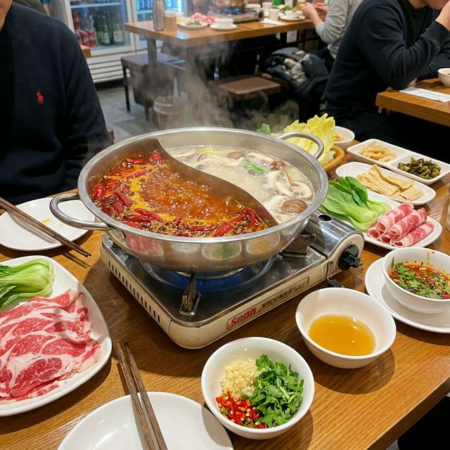

食材准备
- 主材料： 毛肚、鹅肠、肥牛 适量
- 底料： 牛油 500g
- 调料： 郫县豆瓣 200g
- 调料： 干辣椒、花椒 适量
- 调料： 姜块、大蒜、大葱 适量
- 蘸料： 芝麻油、蒜泥、葱花 适量
- 香料： 八角、桂皮、香叶 适量
烹饪步骤
制作底料
锅中放入牛油烧热，下入豆瓣酱、辣椒、花椒、姜蒜段及各种香料，中小火慢熬30分钟，直至香味浓厚，颜色红亮。
加入汤底
在底料中加入鸡汤或开水，大火烧开。可以根据口味加入冰糖、料酒调味。
准备食材
各种肉类、蔬菜清洗切片，整齐码放在盘中。毛肚、鹅肠需保持新鲜，口感才脆爽。
调配油碟
传统的重庆油碟是蒜泥加香油，可以起到解辣降温的作用。根据个人口味可加葱花、香菜。
开涮
在沸腾的红油锅中涮入食材，遵循“七上八下”的原则刷毛肚。亲友围坐，热气腾腾，乐在其中。